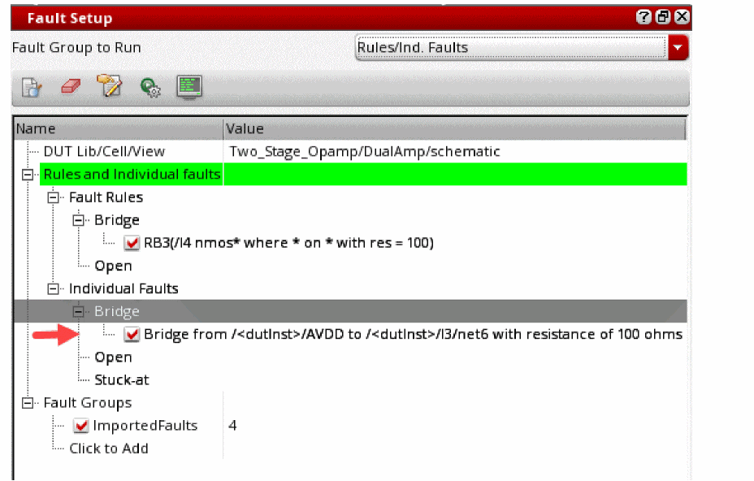
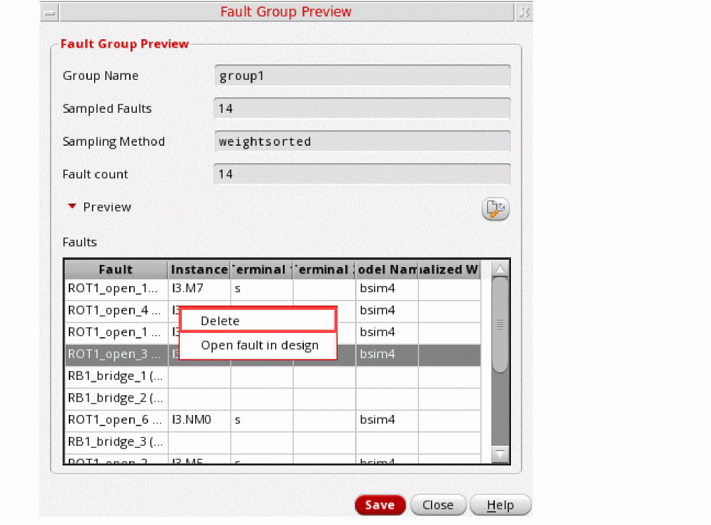
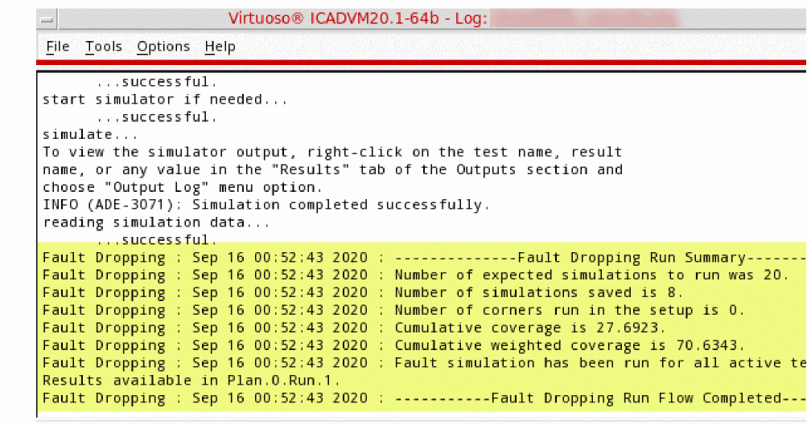

14
Running Fault Simulations
As a part of the
A typical fault analysis consists of fault injection, fault analysis, and test optimization for better fault coverage. Analog fault analysis provides the capability to estimate fault coverage by generating a detection matrix. In addition, it can be used as part of functional safety analysis.
Some faults are more likely to occur than others; therefore, a test that detects the more likely faults will have a higher coverage than the one that detects the less likely faults. You can calculate the defect coverage using the likelihood-weighted sum of the detected faults divided by the likelihood-weighted sum of all simulated faults.
The defect detection matrix can be obtained by comparing the faulty simulation results with nominal (faultless) data. You can further optimize the test to improve the defect coverage based on the defect detection matrix.
In functional safety applications, fault detection is tracked for both functional and diagnostic (checker) modules but reported separately. Functional safety report can be generated based on assert violations of fault analysis results.
The following sections in this chapter provides details on how to use ADE Assembler for these purposes:
- Prerequisites
- Preparing the Setup for Fault Simulation
- Injecting Faults in a Design
- Creating Fault Groups
- Previewing Faults in a Fault Group
- Setting up Run Options for a Fault Simulation
- Running a Fault Simulation
- Viewing Results of Fault Simulation
- Automatic Fault Dropping Using a Run Plan
- Merging Results from Multiple Fault Simulations
- Running Functional Safety Checks
Prerequisites
Ensure that you have set the path to the required simulator as indicated by the table given below.
| Design | Analysis Type | Simulator |
|
AMS Flex flow with a combination of Xcelium 19.03 s006 and Spectre 19.1 ISR7, or higher versions |
Preparing the Setup for Fault Simulation
Before running a fault simulation, do the following in the ADE Assembler setup:
-
Ensure that the transient analysis is enabled for the tests in ADE Assembler.
-
Specify time steps for the transient analysis.
On the Choosing Analysis form, click Options for the tran analysis.
The Transient Options form is displayed. On the Fault tab of this form, specify the fault points as a list of specific time points or as a sweep set with start-step-stop time point values.
The fault time points specified in this form are applied to the test for which you are editing the analysis options. If you do not specify fault times at the test level, the values specified on the run options form for Fault Simulation are used. -
Create fault expressions in the Outputs Setup tab of the maestro view by setting the output type of an expression as
faultexpr.
If required, you can change the type of expressions fromfaultexprtoexprat any time. - Set the run mode as Fault Simulation.
- Set up the faults to be checked using the Fault Setup assistant. For more details, refer to Setting up Faults.
Setting up Faults
You can set up faults by using the Fault Setup assistant in ADE Assembler.
To open the fault setup, do any one of the following:
-
Select the
Fault Simulationworkspace from the Workspace Configuration drop-down list. -
Choose Window — Assistants — Fault Setup.
The Fault Setup Assistant appears to the right of the Outputs Setup pane.
To prepare the setup in the Fault Setup assistant:
-
Specify the DUT library, cell, and view for which you plan to run fault analysis simulation.
To do this, in the Fault Setup assistant, double-click the value cell for DUT Library/Cell/View.
The Select DUT Library / Cell / View form is displayed.
Select the library, cell, and view to which this fault setup has to be applied.
Important Points to Note:- Other fields on the assistant remain disabled until you select the DUT.
- Ensure that the selected DUT is not a top-level design.
- Ensure that the selected DUT is used by all tests enabled for the simulation run.
- If you change the DUT later after configuring the faults, you can retraverse the design to reflect the changes in the Fault Setup assistant.
- To simplify the fault simulation setup, ADE Assembler assumes that multiple tests in a maestro view are used only for one DUT. Even if you use multiple tests for simulating the design, they share the fault setup and the results also show a combined view for all tests. If you want to work on different DUTs, it is recommended to create multiple maestro cellviews.
- If your test setup contains config sweeps, all swept cellviews use the common fault list created for the design specified in the DUT Library/Cell/View field of the Fault Setup assistant. The fault list is created using the base configuration, which includes the design setup assuming no config sweep is defined. You need to ensure that the swept cellviews use the same device under test so that the fault list remains accurate for all runs. Depending on the changes in the config sweep, you might find that some faults are not simulated for a swept cellview. For example, if you replace a block by a behavioral block, in that case, all faults inside that block become invalid.
- Ensure that the local variables for the enabled test do not contain sweep values. Local sweeps are currently not supported by fault simulation.
-
Specify faults to be injected into the design, which is the DUT selected in step 1.
There are three ways in which you can specify the faults to be injected in the DUT: -
(Optional) Create fault groups to group the faults that you would like to use together in a simulation.
Specifying Global Preferences for Fault Setup
Before defining a fault to be injected, verify that the global or default options to be used for different types of faults have the required values. These global preferences can be specified on the Virtuoso ADE Fault Setup Global Preferences form.
To open the Virtuoso ADE Fault Setup Global Preferences form:
The Virtuoso ADE Fault Setup Global Preferences form is displayed.
Configure your preferences on the different tabs of this form:
- General: Provides options to configure general display options for fault preview that is displayed on the Fault Rules form.
- Rule/Individual Faults: Provides options to the default resistance value for each type of fault, and the names of the ground and supply net to which a fault will be stuck.
-
Weighting: Provides options to specify the following weight options for fault rules. Spectre calculates the weighted likelihood for each fault based on its ratio to the total weights within the block. This tab contains the following options:
-
Default Weight Expression: An expression to define the default fault weighting function to be used for a fault rule. This is the default value that is displayed in the Weight Expression field on the Fault Rule Setup form.
The default value is 1, which indicates that all faults have the same weight. -
Default Weight Factor: A value that specifies the likelihood for all faults in a given fault block. This is the default value that is displayed in the Weight Factor field on the Fault Rule Setup form.
The default value is 1. - Default Extra options: Any other Spectre option to specify the weight of a fault block.
- Individual Fault–Default Weights: The default weight to be assigned to an individual fault.
- Apply Fault Collapsing to: Specifies the level at which fault collapsing can be enabled. You can choose one of the following:
-
Default Weight Expression: An expression to define the default fault weighting function to be used for a fault rule. This is the default value that is displayed in the Weight Expression field on the Fault Rule Setup form.
Injecting Faults in a Design
You can inject either Bridge, Open or Stuck-at faults into the design. The Fault Setup Assistant provides the following methods to specify the faults to be injected:
- Using Fault Rules
- Creating Individual Faults
- Using Fault Files
- Importing Fault Rules from Other Cellviews
Using Fault Rules
Fault rules provide a quick way to create faults for multiple instances or nets that meet the given criteria. To define the rules for fault creation, use the
To create faults based on fault rules, perform the following steps:
- In the Fault Setup assistant, expand the Rules and individual faults tree.
-
Right-click Fault Rules, and choose the Add Bridge, Add Open, Add Stuck-at, or Add Custom command depending on the type of fault for which you are defining the rule.
The Fault Rules form is displayed.
By default, the rule is defined by using the * wildcard in the Instances and Pin Names fields. -
Modify the values in the Fault Rule Setup section to define the rules or criteria for fault creation. For example, you can specify the names of instances as
/I3 /I3/I4, and pin names asD S.
See Fault Rules Form for mode information.The values displayed in the Weight Expression and Weight Factor fields are taken from the Weight tab of the Virtuoso ADE Fault Setup Global Preferences form -
In the Fault Rule Preview section, click Refresh to view the list of possible faults that can be created using the rule defined in this form.
When you click Refresh, ADE Assembler runs Spectre info analysis that generates a fault list based on the instances, devices, and pins specified by the criteria defined by the given rules. A progress bar indicates the completion status of the info analysis.
When the info analysis is complete, the resulting list of faults is shown in the Faults table at the bottom of this form. The total count of faults is displayed in the Fault Count field.
While identifying all faults based on the specified rule, Spectre info analysis uses fault collapsing or the weight expression to calculate the absolute fault, which is the likelihood count of a fault. This absolute weight value is displayed in the Absolute Weight field in the preview table. ADE Assembler uses this value later for fault normalization while generating fault preview before simulation. -
Review the list of faults. If required, edit the rules again and click Refresh (
) in the Preview section to review the list of possible faults.
You can configure the type of information to be displayed in the Faults table by clicking Configure preview settings, and selecting or deselecting an option.
You can also configure the columns to be displayed by using the options on the General tab of the Virtuoso ADE Fault Setup Global Preferences form shown below. -
When the fault rule setup and the resulting faults are final, click OK to close the form.
The rule is added to the <fault-type> tree within the Rules and individual faults tree.
Fault Rules Form
| Form Field | Description |
|
Type of fault to be injected. Either |
|
|
An expression that defines the likelihood of faults for a block during fault generation. The likelihood of a fault occurrence can be based on the circuit element area, proximity of the adjacent interconnect, length of the interconnect, or other factors.
In ADE Assembler, you can define a weight expression using device parameters. For example,
When the parameters are not specified or contain multiple types of devices or models, weight expressions may not be evaluated for some of the models. In such situations, the expression can result into 0. To avoid this, you can use the
In this example,
Similarly,
For information about fault weighting and its usefulness in the calculation of coverage report, see |
|
|
A value that defines the weighting factor for a given block or rule. Weight factor is used for the normalization of faults across fault bocks or rules when faults in a particular fault block have very high or very low likelihood as compared to the faults in other fault blocks. |
|
|
Name to be assigned to the fault rule. This rule name prefixed with the default prefix for each rule type is shown in the rule summary shown in the Fault Setup assistant. |
|
|
Name of the net to be used to short the terminals of the specified devices. This field is available only for stuck-at faults. |
|
|
Type of custom fault to be inserted. These custom faults can be available in text files or in schematics.
|
|
|
This section contains settings that are used to filter devices on which faults are to be injected. |
|
|
Specifies whether to use the netlist format for instance names. For example, By default, this check box is not selected and you can specify the instance names in the schematic syntax. When using the netlist syntax, you can specify only one instance in the Instance field. When using the schematic syntax, you can specify multiple instance names. |
|
|
Specifies where to inject layout-based faults.
If you choose |
|
|
Name of an instance below which you want to inject the faults. Either specify the name of an instance or use the When the Use Netlist Syntax check box is deselected, you can select an instance from the schematic by clicking (...) to the right of this field. You can also use the wildcards to specify instance names in netlist syntax. |
|
|
A space-separated list of instance paths that you want to exclude while injecting faults in the given design hierarchy.
You cannot use the When the Use Netlist Syntax check box is deselected, you can select one or more instances from the schematic by clicking (...) to the right of this field. You can also use the wildcards to specify instance names in netlist syntax. |
|
|
A space-separated list of subcircuit names that you want to exclude while injecting faults in the given design hierarchy. |
|
|
Specifies the minimum capacitance an extracted parasitic capacitor must have to be identified as a short defect. |
|
|
Specifies the minimum resistance an extracted segment resistor must have to be identified as an open defect. |
|
|
|
|
|
|
|
|
This section contains settings that define restrictions to be applied while faults. |
|
|
A space-separated list of fault devices on which you want to inject faults. You can use the * wildcard to specify multiple device names matching the given criteria.
By default the field is set to |
|
|
A space-separated list of pin names on which you want to inject faults.
If you want to inject faults on all pins of the specified instances, specify |
|
|
Enables fault collapsing to remove equivalent faults. When you enable fault collapsing, Spectre collapses each set of equivalent faults within a fault rule into one and assigns an absolute weight, which is a summation of the absolute weight assigned to each equivalent fault collapsed into it. For more details on fault collapsing, refer to
This check box is enabled only when the Apply fault collapsing to setting on the |
|
|
Additional options to be used by the Spectre Ensure that the options are written in a format supported by Spectre. |
|
Creating Individual Faults
If you want to create a fault with unique settings, instead of using fault rules, you can create individual faults of type bridge, open, or stuck-at.
- Creating Individual Bridge Faults
- Creating Individual Open Faults
- Creating Individual Stuck-at Faults
- Creating Custom Faults
Creating Individual Bridge Faults
To create an individual bridge fault:
- Expand Individual Faults in the Fault Setup assistant.
-
Right-click Bridge and choose Add Bridge.
Alternatively, right-click Individual Faults and choose Add Bridge.
The schematic of the design is displayed.

-
Select two nets for the bridge.
A bridge fault is defined to be added between the selected nets.
By default, the fault uses the default resistance value and weight factor specified on the Virtuoso ADE Fault Setup Global Preferences form. You can modify the resistance value for a fault rule by using the Modify Individual Fault command in the context-sensitive menu of a fault. This command opens the Modify Individual Fault form that you can use to modify the resistance value or the weight of the selected fault.
Creating Individual Open Faults
To create an individual open fault:
- Expand Individual Faults in the Fault Setup assistant.
-
Right-click Open and choose Add Open.
Alternatively, right-click Individual Faults and choose Add Open.
The schematic of the design is displayed. -
Click a net on the schematic.
The Individual Open Defect form is displayed. This form displays a list of pins through which the selected net is connected to the instances in the design.
-
Using the arrows, move the terminals to the Left or Right list to define the placement of the open fault.
The fault will be injected in such a way that the terminals listed in the Left list are on the left and the terminals listed in the Right list are on the right of the open resistor is injected on the selected net. The Individual Open Defect form lets you customize the cut set of the net.
Creating Individual Stuck-at Faults
To create an individual stuck-at fault:
- Expand Individual Faults in the Fault Setup assistant.
-
Right-click Stuck-at and choose Add Open.
Alternatively, right-click Individual Faults and choose Add Stuck-at.
The schematic of the design is displayed. -
Click a net that you want to use for the stuck-at fault.
A new fault is created by using the selected net. The resistance value used for this fault is taken from the Virtuoso ADE Fault Setup Global Preferences form.
Creating Custom Faults
You can create the following types of custom faults:
-
Custom insertion: In this type, a customized subcircuit instance is connected to the nodes specified in the fault setup. The following example shows that a fault instance is inserted into the nominal circuit by not connecting
n1andn2.
-
Custom replacement: In this type, a specific device or subcircuit instance is replaced by a custom subcircuit. The order and number of terminals should match in the two.
In the following example, an instance is replaced by the highlighted fault subcircuit.
-
Custom open: In this type, a node is split into two nodes and a custom subcircuit fault is inserted. The custom open subcircuit must have two terminals. While inserting the custom subcircuit, the first terminal of the custom subcircuit is connected to the original node while the second terminal is connected to the new node.
In the following example, an instance with two terminals is inserted between the original noden1and the new nodeX.
Subcircuits for Custom Faults
You can specify subcircuits to be used in custom faults in the following two ways:
-
In a model file, as shown in the following example:
subckt faultRC n1 n2
r1 (n1 n2) resistor r=100
c1 (n1 n2) capacitor c=100f
ends faultRC
To use the custom faults from model files, you can add those model files in the Model Libraries Setup form.
-
A subcircuit in the schematic as shown in the following example:
Fault Setup for Custom Faults
Similar to the other types of faults, specify fault injection rules on the Fault Rules form. The following form fields are specific to custom faults:
- Custom Type: Type of the custom fault.
- Fault Custom: Name of the subcircuit to be used to insert custom faults.
Related Topics
The
Using Fault Files
You can import the faults defined in a text file directly into the fault setup. All faults imported from the fault file are added to a group in the setup. For more details, refer to Importing Faults from a File into a Group.
Importing Fault Rules from Other Cellviews
If the fault rules defined in another cellview are relevant for the testbench in the current cellview, you can import the rules from those cellviews by using the
If the destination cellview does not contain any fault rule, the complete set of fault rules are imported from the source cellview. However, if the destination cellview contains fault rules, the value of the Operation field on the Import Setup form defines how the rules from the source and destination cellviews are used.
The following rules describe the import mechanism.
Setting Up Fault Rules for Layout-based Faults
Layout-based fault rules are useful when you want to inject faults that consider parasitics from DSPF files. To create rules for layout-based faults:
- In the Simulation Files Setup form, specify the paths to the DSPF files extracted from the layout.
- In the Fault Rules form, choose a fault type in the Type field.
- Enter specifications for the fault rule in the Fault Model section.
-
From the Fault Extract drop-down list, select one of the following values:
-
sch: Injects faults that are compatible with the schematic-based netlist -
spf: Injects faults that are compatible with the layout-based netlist
Depending on the fault type, a new field is displayed in the Design Hierarchy Filter section. When the Type field is set toBridgeorStuck-at, the field is named Minimum Capacitance. When the Type field is set toOpen, the field is named Minimum Resistance. -
- Enter a valid value in the Minimum Capacitance or Minimum Resistance field.
-
Complete the rule setup and close the form.
A new fault rule is created and added to the Fault Setup assistant.
If required, create more fault rules for other fault types. If you want to use the rules injected by multiple rules in a simulation, create a new group and add the fault rules to that. The tool calculates a unique set of faults and shows the count in the Add to Fault Groups form. Choose a group name and click OK.
Related Topics
Creating Fault Groups
If you want to use some fault rules together on a design hierarchy, you can bundle them together in fault groups.
By default, the fault simulation is run for the faults specified in the Rules and Individual Faults tree in the Fault Setup assistant. This is indicated by the green highlight in this assistant. If you want to consider any other fault group for the simulation run, select the name of that fault group from the Fault Group to Run drop-down list.
-
In the Fault Setup assistant, expand the Fault Groups tree and click Click to add.
A new item is added to the tree and the group name field becomes editable. -
Type a name to be used for the group, and press
Enter.
A new group is created with the given name and its fault count is set to0. This group is also added to the Fault Group to Run drop-down list.
Related Topics
Creating a Fault Group by Copying An Existing Group
You can also create a fault group by copying an existing group. The newly created group gets the faults from the source group. You can modify it by adding or removing faults.
To create a copy of a fault group:
A copy of the group is saved with the default name in the format source-group-name_copy_incremental-num. You can rename it as required.
The status of the new fault group is same as that of the source group name.
Adding Faults to Fault Groups
At a given point of time, there can be many faults and fault rules defined in the Fault Setup assistant. You can include a similar set of faults in a group to manage them together or to run simulation for all faults grouped together.
You can add faults to a fault group in two ways:
To add faults defined in the Fault Setup assistant to a fault group, perform the following steps:
- Select one or more fault rules or individual faults to be added to the group.
-
Right-click and choose Add to Fault Group.
If no fault list is generated for the selected fault rules or their fault list is not up to date, the tool shows a message to prompt you whether you want to generate the fault list before adding the rule to the fault group. Click Yes if you want to continue.
If you are sure that you want to always generate fault list in such cases, set the suppressAddToFaultGroupsPrompt environment variable tot.
The Add to Fault Group(s) form is displayed.
In the Unique faults being added field, the form displays the total count of unique faults resulting from the rules in different groups. -
Hold the
Ctrlkey and select the names of groups in the Groups list. -
Click OK.
The faults are added to the selected groups.If you have rules for layout-based faults, you cannot group them together with schematic-based faults in a fault group.If you have created fault groups, ensure that in the Fault Group to Run drop-down list, you select the group that you want to use for the simulation run. The selected group is highlighted in green. You can also preview the list of faults included in a fault group. For more details, refer to Previewing Faults in a Fault Group.
Importing Faults from a File into a Group
You can import the faults defined in a text file directly into the fault setup. All faults imported from the fault file are added to a group in the setup.
To import the faults from a file, perform the steps given below.
- In the Fault Setup assistant, expand the Fault Groups tree.
-
Click Click to add and specify a name for the fault group that will contain the faults imported from the fault file.
The faults imported from the fault file are added to this fault group. - Right-click on the newly added fault group and choose Import Fault File from the context-sensitive menu.
- In the Choose Fault Files form, browse the required CSV file path, and click Open.
-
The specified CSV file containing the faults is added to the setup.
The fault file is required to be written in a specific CSV format that is read by ADE Assembler. The following example shows the format to be used:
Name,Type,From,To,OpenTerminals,Net,Resistance
B1,Bridge,gnd!,/<dutInst>/I10/vdd!,,,100
OT1,Open,,,/<dutInst>/I27:B,/<dutInst>/net21,10K
ON1,Open,,,/<dutInst>/I5/M3:G,/<dutInst>/clk,10K
S1,StuckAt,/<dutInst>/net44,/<dutInst>/I2/vddd!,,,100
Deleting Fault Rules and Fault Groups
- Select one or more fault rules.
-
Right-click and choose Delete.
The tool displays a message with a list of selected fault rules seeking confirmation for deletion. - Click OK to proceed with deletion.
Similarly, to delete fault groups, select one or more fault groups, right-click, and choose Delete Fault Group from the context menu.
Specifying Fault Sampling Options and Auto Stop Criteria
When the fault universe consists of a large number of faults, it is practically impossible to run simulations for all the faults. You can choose to run simulation for a subset of faults or apply a stopping criteria to automatically stop simulations after a specific coverage criteria is met.
Specifying Fault Sampling Options
Sampling helps in selecting a subset with fewer faults that can represent the whole fault universe. This helps in estimating the overall coverage with very less simulations.
In ADE Assembler, you can use the following sampling methods supported by Spectre:
For details and guidance on these sampling methods, see Fault Selection and Sampling in
To specify sampling options for fault analysis:
-
Click Sample the faults on the Fault Setup assistant toolbar.
The Sampling and Stop Criteria Settings form is displayed.
- Select Enable Sampling.
- Choose a sampling method from the Sampling Method drop-down list.
-
In the Perform Sampling By field, choose one of the following options to specify how you want to choose samples:
-
Number: Uses a specific number of faults. This is selected by default.
If you choose to perform sampling by number, specify the number of random samples to be selected in the Number of Samples field. -
Ratio: Uses a percentage or ratio of the possible samples.
If you choose to perform sampling by ratio, the Sample Ratio (%) field is enabled. Specify the percentage of the samples to be selected.
-
Number: Uses a specific number of faults. This is selected by default.
- In the Seed Value field, specify the seed value to be used as the starting point for random sample generation.
- If the sampling method is randomuniform or randomweighted, sampling is performed by replacement, which means that a selected fault is retained in the sampling pool and may be sampled again. With this method, the number of faults simulated can be fewer than the number of samples selected. Therefore, fault detection is done at a specific confidence level. The default confidence level is 97%, but you can change it in the Confidence Value (%) field.
- Click OK to save the sampling options and close the form.
The sampling options specified on this form are used to generate samples of faults used for simulation. The
For the randomuniform or randomweighted sampling methods, Spectre internally uses the Clopper-Pearson formula to estimate the confidence interval when the sampling based simulation is finished. After the results are displayed in the Faults results view, you can change the value in the Confidence (%) field or the confidence interval calculation formula in the Interval Option drop-down list on the toolbar and check the confidence interval.
Spectre supports two approaches for confidence interval calculation with the given confidence level:
-
Clopper-Pearson formula: This formula is recommended when fault sampling with replacement is performed. Therefore, when using this formula, use the default value yes for the
faultsamplereplaceoption. -
Wald formula: This formula is recommended when fault sampling is done without replacement. When using this formula, specify
faultsamplereplace=noin the additionalParams field on the Misc tab of the Transient Options form, as shown below.
For more details about these approaches, see
Specifying Automatic Stopping Criteria
To specify auto stop criteria:
- In the Sampling and Stop Criteria Settings form, select Enable AutoStop.
- Specify a percentage value in the Target Coverage (%) field. When the given percentage of total faults are run, ADE Assembler stops simulating the remaining points.
-
(Optional) Select Use Confidence Limit to use the confidence limit instead of coverage target as a criteria for automatic stopping. Use this option when you selected the
randomuniformorrandomweightedsampling method. - Click OK to save the options and close the form.
In the next simulation run, ADE Assembler considers the settings specified on this form and automatically stops the simulation when the specified criteria is met. For example, if you specify the target coverage percentage as 60%, ADE Assembler stops the simulation after 60% points are run. For the remaining points, the results are shown as canceled in the Detail or Detail-Transpose view.
Previewing Faults in a Fault Group
Fault preview helps in viewing the final list of faults the tool will use to run simulation for the selected fault group.
To preview the list of faults included in a fault group, do this:
- Select the name of the fault group in the Fault Group to Run drop-down list on top of the Fault Setup assistant.
-
Click Preview all faults for fault group selected to run (
) on the Faults Setup assistant.
ADE Assembler runs the Spectre info analysis to identify the fault list and if enabled, applies the sampling options to arrive at the final list of fault samples in the Faults table.
It then displays the list in the Fault Group Preview window.
Key Points to Observe
-
If the select group is
Rules/Ind. Faults, the Faults table shows a combination of all the faults defined by the rules and the individual faults defined in the assistant. -
When multiple fault rules are enabled, the weights of faults are normalized across all fault rules to ensure that the relative weight of a fault looks reasonable when compared to other faults from other rules. In the example given below, the fault
RB1_brige_115has an absolute weight of 8 in the Fault Rule Setup form, where its weight changes to 0.00771after normalization.
-
When the
randomuniformorrandomweightedsampling methods are used, you may observe that the number of faults in the list are less than the sampled faults. This is because in the replacement method, it is possible to choose a sample more than once, but it is not simulated multiple times. In this case, the fault preview shows a mismatch in the sampled faults and fault count, as shown below.
-
When the
randomuniformsampling method is used, the Normalized Weight column in the Faults table is blank. This is because Spectre does not consider weighted likelihood with this sampling method. For more details, refer to Fault Selection and Sampling in Spectre Classic Simulator, Spectre APS, Spectre X, and Spectre XPS User Guide. -
If the faults are imported from a fault file, they are prefixed with
EXT_to indicate that these are imported from an external source, and all details for each fault are displayed in the Fault column. Other columns remain blank. An example of the imported faults is shown below.
- You can configure the list of columns to be displayed in the Faults table, click and customize the display settings according to your preferences.
Probing Faults in a Schematic
While previewing faults in the Fault Group Preview form, you can also probe them in the schematic view of the design.
To probe a fault in the schematic:
- Preview the fault list for the group.
-
In the Fault Group Preview form, right-click a fault and choose Open fault in design.
ADE Assembler opens the schematic in a new tab and highlights the device with the fault.
Clearing Fault Cache
After modifying the fault rules or individual faults, you need to re-evaluate the fault universe by running the rules again. To clear the fault cache and re-validate the faults before generating the fault preview, click on the toolbar of the Fault Setup assistant. After clearing the cache, you can run the Preview Faults command to regenerate the fault list.
Modifying Fault Groups
You can modify a fault group by removing the faults not required for that group. To remove faults from a fault group:
- Preview the fault list for the group.
-
In the Fault Group Preview form, select the faults to be removed.
You can hold the Ctrl key and click faults for multiple selection. -
Right-click and choose Delete.
The selected faults from removed from the preview. -
Click Save to save the changes in the fault group.
The fault count for this fault group is updated on this form as well as in the Fault Setup assistant.
Setting up Run Options for a Fault Simulation
Before running a fault simulation, spefcify the run options to be used. For this, click Simulation Options in the ADE Assembler toolbar.
You can select from the two methods given on the Fault Simulation run options form. These methods use two different fault analysis engines provided by Spectre–direct fault analysis and transient fault analysis. These engines provide a trade-off between accuracy and performance.
Direct Fault Analysis
In the direct fault analysis, faults are injected at the beginning of each analysis type, such as dc, ac, or transient. This mode provides the most accurate results. However, when there is a large number of faults in the design hierarchy, the simulations might take long to complete.
Transient Fault Analysis
In the transient fault analysis, a circuit with fault is simulated together with the test points specified on the time axis. Spectre starts regular transient analysis till the time reaches the test point. Then, at each test point, the following actions are performed:
- Fault-free transient state is saved
- A fault is injected into the circuit
- With fault-free state used as the initial condition, transient fault simulation is continued with regular time step control and accuracy settings
- The result is saved and the database is cleaned when all fault solutions are found
Fault-free transient simulation is restored and continues till the next test time point.
Run Options for Direct Fault Analysis
As explained earlier, this Direct Fault Analysis is used to inject faults in the beginning of each analysis type and considers them for the entire run. It provides most accurate results, but should be avoided for large designs.
Run Nominal Simulation — Specifies whether to perform a nominal (fault free) analysis before fault analysis.
Extra Options — Specifies additional options for the selected fault analysis. You can specify a space-separated list of option-value pair of options for that are currently not available in ADE Assembler, but are available in Spectre.
The options specified in the Extra Options field are added to the sweep statement for the direct fault analysis. These options are not validated or processed by ADE Assembler. They are directly added to the netlist. Ensure that these are specified in the correct format.
To use any extra options for the transient analysis statement:
- Expand Analyses for the test in the Data View assistant.
-
Double-click tran to open the Choosing Analysis form.
The tran analysis is selected and the form shows options for this analysis. - Click Options to open the Transient Options form.
-
Specify additional options in the additionalParams field on the Misc tab. An example is shown below.
Run Options for Transient Fault Analysis
Transient fault analysis injects and considers faults only at specific test points and given lead times on the time axis. For the other time values, a fault-free state of circuit is used. This method produces results very fast, but with limited accuracy.
The description of each field is given below.
Section: Simulation Method for Transient Fault Analysis
- linear — Fastest method with limited accuracy as it simulates one time step at the test point and runs only one Newton iteration.
- maxiters — Integrates the time step at the test point taking multiple Newton iterations until the results converge to a commonality or the specified number of maximum iterations are covered.
- onestep — Works like maxiters, except that it steps back one time step if the simulation results do not converge and continues the Newton iterations until a solution is found.
- leadtime — An accurate method in which the faults are injected prior to each test point with the lead time, which is specified in the field Lead Time.
- testpoint — Performs Transient Fault Analysis for every time step till the next test point by injecting faults after the previous test point.
- timezero — The most accurate method with the longest simulation run time as it injects faults at time zero and performs transient fault analysis for every time step till the next test point.
- Start/Step/Stop — Displays and enables the fields to set the start, step and stop time for transient fault analysis.
-
Fault Time Points — Displays and enables the Fault Time Points field in which you can specify a space-separated list of time points at which the transient fault analysis is to be performed.
-
Extra Options — Specifies additional options for the Transient Fault Analysis. You can specify options that are currently not supported by ADE Assembler, but are supported by Spectre. You can specify a space-separated list of
option=valuepairs.
Running a Fault Simulation
After injecting the faults and setting the run options, you can run the Fault Simulation by clicking Run Simulation on ADE Assembler toolbar.
ADE runs Spectre info analysis before every fault simulation run to resolve the fault universe. In this process, Spectre removes all duplicate faults added by different rules.
Also see: warnWhenSimsExceed
After the simulation is complete, the Results tab shows the results in Detail view. It is a consolidated report of the fault expressions defined in the tests. For a detailed analysis of results for each fault, open the Fault result view and apply filters as explained in the Viewing Results of Fault Simulation section.
If there are failures in the simulation results, you can review the netlist or the setup. For more details, refer to the Debugging Results and Troubleshooting Errors section.
Related Topic: Running Simulations Using Selected Faults from Results
Viewing Results of Fault Simulation
The simulation tries to detect the injected faults for each output of type faultexpr, a new output type in ADE Assembler. At each fault point, the simulator evaluates the outputs and calculates the count of detected and undetected faults, as shown in the snapshot of the Detail-Transpose results view given below.
The red and green colors of the cells in the Detail and Detail-Transpose views indicate detected and undetected faults, respectively. Though for a fault simulation, it is considered good when a fault is detected, this color schema has been kept similar to the one used for the results of specifications where red indicates a failure in meeting the defined specification for an output.
In the Detail view, you can plot graphs for outputs across all design points, as shown below.
The following topics explain how to explore the results of a fault simulation:
- Viewing Summary of Fault Simulation Results
- Customizing the Display of Faults in the Fault View
- Merging Results from Multiple Fault Simulations
- Running Simulations Using Selected Faults from Results
Viewing Summary of Fault Simulation Results
You can view the summary of fault results in the Fault results view. By default, this view shows the count of detected or undetected faults found while evaluating the expressions for each test.
By default, all simulation errors and evaluation errors are considered as undetected faults. You can use the handleErrorsAs environment variable to ignore the errors or consider them as detected faults. When the errors are ignored, they are not included in the count of detected or undetected errors.
You can use the various filters or hyperlinks to focus on specific test, expression, or output, or to view faults in the design schematic.
When the setup has multiple tests, you can use the coverage report to identify the useful tests that you can keep and eliminate others.
For this, select Cumulative in the expr column. The cumulative results for all the expressions evaluated for each test are shown. The detectedCount and undetectedCount columns show the total number of faults detected or undetected for all expressions evaluated for that test.
The example given below shows that test DCGain detects a total of 47 out of 50 faults (with 94% coverage). Therefore, it gives a better coverage, but at the same time, you need to analyze the undetected faults for this test. It helps to ensure that the undetected fault is not a must item to be detected. If it is, you need to modify the setup to ensure that the fault is detected.
Exploring Instance that Contain Faults
The values in the fault view are hyperlinked to further details which are helpful in exploring the detected or undetected faults at the schematic level. For example, the count of detected or undetected faults are hyperlinks to the detailed view of these faults.
In the detailed view, you can click a fault name to view the design instance where the fault is reported, as shown in the following example:
Customizing the Display of Faults in the Fault View
You can customize the view of the fault table in the following ways:
-
Hide the columns you do not want to see. For this, use the Hide Column command from the context-sensitive menu of the Fault table.
You can use the Show All Columns command to view the hidden columns.
- Change the order in which columns are displayed. For this, select the column you want to move, drag it to the location where you want to place it, and drop it.
-
Apply the field or column filters to view the selected fault data. Columns such as Corner, status, or DC Gain have drop-down filters that you can use to choose a specific value to filter data.
Columns such as faultName, dcGain, dcGain2, highValue, and so on, provide enhanced filters where you can type in the filter criteria using specific values and wildcard characters. Specify a criteria and press Enter to view the filtered rows.
Note the following important points about the column filters:-
You can apply filters in multiple columns together.
The following example shows how column filters have been used to view all the faults for cornerNominalwhere status isD, DCGain isDand dcGain is less than 9m. - You can use numerical comparison operators, such as > or <.
-
You can use filtering options from the context-sensitive menu of the cell in which you applied a filter. These options are same as the filtering options in other result views.
-
You can choose filters from the drop-down list. As shown in the example given below, the list shows available values including the previously used filters and the unique values in that column.
- You can clear the previously used filters for a column by using the Clear Search History command in the context-sensitive menu of that column.
-
You can hide the filters by using the Hide Filters command from the context-sensitive menu of the column headers.
-
You can apply filters in multiple columns together.
Creating a Custom Fault Filter
By default, the drop-down list to select a fault filter shows the two main types, Coverage and Detail. If required, you can create your own custom fault filters with different criteria and save them so that they can be reused for the same or different results.
To define and save a custom fault filter, perform the following steps:
-
Click Edit or create custom violation filter on the toolbar of the
Faultresults view to open Customize Fault Filters form.
-
Specify appropriate values in the following fields of this form.
-
Click
Saveon this form to save these filter settings in a custom file.
Important Points to Consider for Custom Filter Syntax:
-
Instance and net names must use the simulator namespace, not the schematic namespace. For example,
I8.I0.MP1is correct, whereas/I8/I0/MP1is incorrect. - Query operators are case insensitive
- Strings can be in single or double quotes
- If the field names contain spaces or special characters, they must be enclosed in double quotes.
- Query operators for custom filters support the same SQLite operators that you can use on the Customize Violation Filters form for Check and Asserts.
Merging Results from Multiple Fault Simulations
You can merge the results of multiple fault simulation histories to view the consolidated results in one history.
This feature saves the time required to rerun simulations in the following scenarios:
- After running a fault simulation, you modify the fault rules or the test setup, or make any other change in the active setup, and run simulation. You can merge the results saved before and after making these changes and view a consolidated report.
- You want to check the fault detection rate by dropping faults in subsequent runs, and then want to merge results of all runs. For more details, refer to Checking Fault Detection Rate.
To merge results of multiple fault simulations:
- Open the history of the fault simulation that you want to update by merging results from other histories into it.
- Open the Fault results view.
-
Click Merge Fault Histories on the toolbar of the Results tab.
-
The Merge Fault History form is displayed. It shows the list of all available histories of fault simulation run for this testbench, as shown in the following example.
- Select one or more histories from which you need to merge the results.
- Click OK.
-
The results of all selected histories are merged in the history for which you displayed results. The history name on the Results tab shows the progress of merging.
After the merge is successful, the count of detected and undetected faults are updated to reflect the merged data.
The following example shows the benefit of merging fault simulation results saved for two different tests separately:
Original Results of FaultSimulation.0:
Results of FaultSimulation.1 after FaultSimulation.0 is merged with it:
Important Points to Note
- After the results are merged in a history, they are saved in the results database of the history. Next time, when you open the same history again, it shows the merged data.
- To check whether a history contains merged data, open its results and click Merge Results on the toolbar of the Results tab. If the results are already merged, the history names are shown as selected.
- To rollback to the original version of a history, that is, to remove the merged data, open the results and click Merge Results on the toolbar of the Results tab. Click Reset on the Merge Fault History form to deselect all selected histories. ADE Assembler removes the results that were merged from other histories.
- It is possible to remove the merged data for only a few selected histories instead of all histories. In that case, you need to individually deselect the history names on the Merge Fault History form instead of clicking Reset.
Related Topics
dropUndetectedSimErrorsInFaultDroppingFlow
Checking Fault Detection Rate
Fault simulation runs are generally time consuming because of a large number of faults in the design. Ensuring an effective fault coverage would help in saving time.
In a multi-test testbench, you can check the fault detection rate for each test by running simulation for each test individually and dropping the faults detected for one test in the fault setup for other tests. You can then merge the results of all tests and review the cumulative report to calculate the effective overall coverage.
Consider an example testbench with three tests: DCGain, DC-Test, and Swing. The following figure shows the cumulative coverage of faults when a simulation is run with all three tests enabled in this example:
To check the effective coverage of faults:
-
Create a new fault group, say
undetectedFaultGrp, in the Fault Setup assistant to save all undetected faults. -
Select a test in the Data View assistant and deselect other tests.
In the first run, it is recommended to select a test that has the maximum coverage of faults and minimum run time according to your estimate or observation. - Using the complete fault rule setup that was used for simulation with all tests enabled, run a fault simulation.
-
To view the cumulative coverage of faults, open the
Faultresults view and selectCumulativefrom the Filter list for the expr column.
-
Right-click the value in the
undetectedCountcolumn and choose Add to Fault Group and then the name of the fault group you created in step 1.
- Choose the newly created fault group in the Fault Group to Run drop-down list in the Fault Setup assistant.
- Disable the test already used in steps 2 to 5.
-
Select one of the remaining tests and repeat steps 3 to 6.
In each iteration, you run fault simulations by selecting one test at a time and using the undetected fault list from the previous runs. In every run, you drop the faults already detected in the test used for the previous simulation run. The next run considers only the undetected faults. - After the simulation for all tests are complete, merge the results in one history. For details on how to merge faults, refer to Merging Results from Multiple Fault Simulations.
-
Select
Cumulativefrom the Expression drop-down list in the Fault results view.
Observe the difference in the fault coverage for each test with the initial coverage reported by the run with three tests.
The coverage for testsDCGainandSwingare different because by default, a fault is counted as detected for all tests if it is detected by any one of them and it is reflected in the coverage for each test. By dropping the faults detected by one test from the simulations for other tests, you create a unique fault set for each test.
The fault set created after fault dropping is as effective as the fault set without fault dropping. In the previous example, the cumulative fault coverage for both cases, with or without fault dropping is same,80.43%.
Therefore, it is important to understand that fault dropping is not essential. You can evaluate whether fault dropping improves the run time for your designs or not.
Automatic Fault Dropping Using a Run Plan
You can create a run plan using the fault setup to run multiple simulations, one for each test, in a sequence where each subsequent run in the plan uses a reduced list of faults that were not detected in the previous run. This way of dropping faults that are detected by the previous run helps in focusing on fault coverage and also saves time because the simulation is not run for the faults that are already detected.
Creating a Run Plan for Fault Dropping
To create a run plan for automatic fault dropping:
- Ensure that the maestro cellview contains multiple tests that refer to the same design under test. Each test can have a different setup.
- In the Data View assistant, select the tests for which you want to run fault simulation.
- Ensure that the selected run mode is Fault Simulation.
- In the Fault Setup assistant, prepare a fault setup using fault rules and individual faults as described in Setting up Faults.
-
Click Create Fault Dropping Run Plan on the Fault Setup assistant toolbar.
ADE Assembler opens the Run Plan assistant and creates a run plan by using the tests enabled in the Data View assistant.
For each run in the plan, ADE Assembler automatically adds a pre-run script and a post-run script to prepare a fault list for the next run in the plan.
If a run plan already exists in the Run Plan assistant, runs from that run plan are disabled. -
(Optional) To review the pre- and post-run scripts, right click on any run in the Run Plan assistant and choose Edit Run Conditions.
The Add/Edit Run Conditions form is displayed for the run. The path to the scripts is shown in the Pre-Run Script and Post-Run Script fields. You can open the script files to review and if required, modify their contents by using the SKILL functions related to fault simulations. However, it is recommended not to modify these files.
For all runs except the first run in the plan, this form also adds a run condition to check the success status of the previous run before starting the next run.
- Close the Add/Edit Run Conditions form.
-
Click Execute Run on the Run Plan assistant toolbar to start a simulation for the run plan.
The Results tab opens the Status results view. This view shows the status of each run in the run plan.
The CIW also shows the log for the fault dropping flow.
This log indicates the number of simulations saved by dropping faults in the flow. In the above example, the total fault count visible in the Fault Preview form was 10. If all fault points were run for both tests, a total of 10 simulations would have been required. However, the log shows that, fault dropping saved 8 simulations. In addition, this log shows the coverage statistics. These logs are also saved in the_faultDropping.logsfile in the current work directory.
You can now analyze the detailed results in the Fault results view.
Running Simulations Using Selected Faults from Results
Based on your analysis of output values, you might need to run a simulation using only the fault points corresponding to a few selected output values. You can create a fault group for those fault points and run simulation for that group.
To add faults from simulation results to a fault group:
- Identify a fault group to which you want to add faults.
- Open the Fault or Detail–Transpose results view.
-
Select any cell in the row of the fault that you want to add to a group.
To add multiple faults, hold the Ctrl key and select the cells for those faults. -
Right-click any one of the selected cells and choose Add to Fault Group.
The Add to Fault Group form appears. The Faults list shows the names of the selected faults, and the Groups list shows the names of available fault groups.
- Select the name of a fault group.
- Click OK.
The faults are added to the group. You can select the group in the Fault Group to Run list on the Fault Setup assistant and then run a simulation.
Debugging Results and Troubleshooting Errors
If the design contains dummy devices, Spectre would ignore those because they are not relevant for the functionality of the circuit. However, the devices are still listed in the faults list created by ADE Assembler. This might result into simulation errors. To avoid this, make sure that Spectre does not skip dummy devices.
Debugging Results
While debugging simulation results, if you need to access netlist and output log of Spectre info analysis, click Open Info Analysis Results on the toolbar of the Fault Setup assistant.
This command opens the directory where the netlist and the psf directory of the info analysis is saved.
Running Functional Safety Checks
An important reliability check for a device is its functional safety. This check mainly focuses on the effect of a failure during the lifetime of a device.
To generate this report, you need to have checker blocks in your design to validate the outputs of the functional block.
If the fault detection is enabled for both functional and checker blocks, you can generate a functional safety report that is aligned with the safety classification defined in the ISO 26262 standard, which classifies safe or dangerous, and detected or undetected defects.
The following diagram describes the various types of functional safety categories defined according to this classification.
To generate the functional safety report, perform the following steps:
- Open the results of a fault simulation.
-
Click Generate FSA Report (
) on the toolbar of the Results tab.
The Generate FuSA Report form is displayed. - In the File Name field, specify the file name and path to be used to save the report.
-
In the Select Checker Expression list, select the names of the checker expressions you created to check the output of the checker blocks in the design.
- In the Failure Mode ID field, specify an integer ID of the failure mode being addressed with this report.
-
From the Failure Mode drop-down list, choose one of the following failure modes:
Single point failures are faults in a functional or checker module. In this mode, only a single failure, that is either the functional block or the checker block is considered at a time.
Latent faults are multiple-point faults where the effect of a faulty checker module is evaluated in the context of a faulty functional module. A common method of calculating latent fault results is to apply all relevant failure modes of the functional module to the input of the checker module and then run fault simulation only on the checker module.
Latent faults can be of two types, continuous (LFC) and periodic (LFP).
To identify a latent fault of continuous type, the output of the functional module needs to be monitored continuously by means of a continuous detection in the checker block.
To identify a latent fault of periodic type, the checker module is periodically turned on and off to monitor the output of the functional block.
For more details on these failure modes, refer to Fault Analysis. -
In the Confidence Value field, specify a confidence level in percentage.
For therandomuniformorrandomweightedsampling methods, Spectre internally uses the Clopper-Pearson approach to estimate the confidence interval when the sampling based simulation is finished. The confidence level you specify in this field is used to show the corresponding confidence intervals in the fault detection matrix.
For more details about how Spectre calculates confidence interval, see Calculating Confidence Interval for Fault Sampling. -
From the Interval Option drop-down list, choose a formula to be used for confidence interval calculation. Both,
Clopper-Pearson IntervalandWald Intervalmethods are supported. - Click OK.
The resultant report shows the fault detection matrix for each test followed by an aggregate of detected or undetected, safe and unsafe defects.
faultexpr are specified.
For details about this report, refer to
Return to top